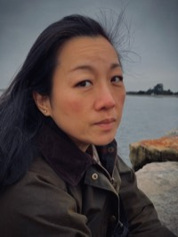

PBS FRONTLINE
53 people whose festival biography mentions PBS FRONTLINE. A mention can mean a job, a past job, a grant, a broadcast or an award: read the bio for which.


- Ramona DiazFilmmaker, panelist · 2 editions, 2019–2020


 Ben LoetermanPanelist, filmmaker · 2 editions, 2024–2025
Ben LoetermanPanelist, filmmaker · 2 editions, 2024–2025 Juliana Schatz PrestonPanelist, filmmaker · 2 editions, 2019–2021
Juliana Schatz PrestonPanelist, filmmaker · 2 editions, 2019–2021- Sasha Joelle AchilliFilmmaker, panelist · 2018
 Wonjung BaeModerator · 2025
Wonjung BaeModerator · 2025 Bonnie BertramPanelist, filmmaker · 2026
Bonnie BertramPanelist, filmmaker · 2026- Alexis BloomFilmmaker, panelist · 2018


- Will CohenFilmmaker · 2018

- Ken DornsteinPanelist · 2016
 Roopa GogineniFilmmaker, panelist · 2023
Roopa GogineniFilmmaker, panelist · 2023 Sabrina Schmidt GordonPanelist · 2021
Sabrina Schmidt GordonPanelist · 2021- Sally HaydenPanelist · 2019
- Erika HowardPanelist · 2020
 Linda JuePanelist · 2021
Linda JuePanelist · 2021- Leen KaradshehPanelist · 2022

 Lizzie MulveyFilmmaker · 2021
Lizzie MulveyFilmmaker · 2021- Thor NeureiterPanelist · 2015
 Mark ObenhausFilmmaker, panelist · 2025
Mark ObenhausFilmmaker, panelist · 2025- Nonny de la PeñaPanelist · 2015
 Rachel RaneyFilmmaker, panelist · 2024
Rachel RaneyFilmmaker, panelist · 2024 Sasha SchellPanelist · 2026
Sasha SchellPanelist · 2026 Charles M. SennottPanelist · 2021
Charles M. SennottPanelist · 2021- Andalusia Knoll SoloffFilmmaker, panelist · 2019
 Loralee SundraPanelist · 2021
Loralee SundraPanelist · 2021- Paul TaylorFilmmaker · 2020

 Amina WaheedFilmmaker · 2021
Amina WaheedFilmmaker · 2021
Annie WongFilmmaker, panelist · 2025 Olivia YarvisPanelist · 2022
Olivia YarvisPanelist · 2022